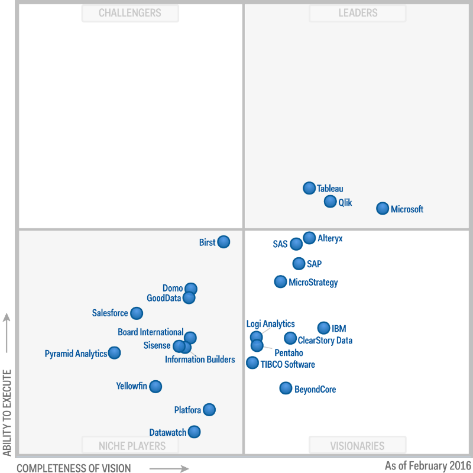
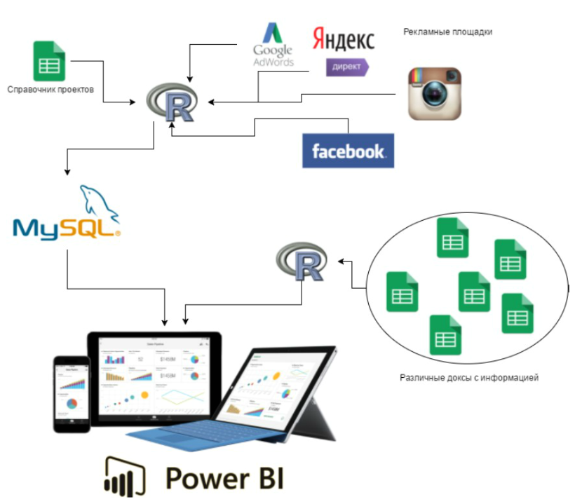
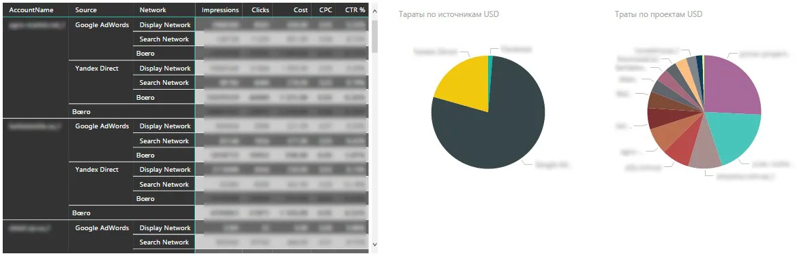
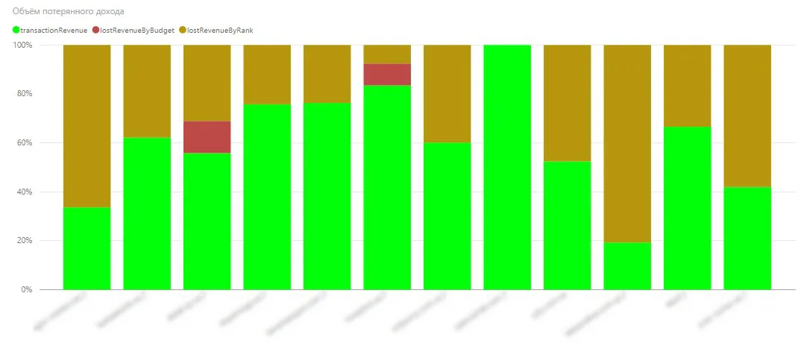
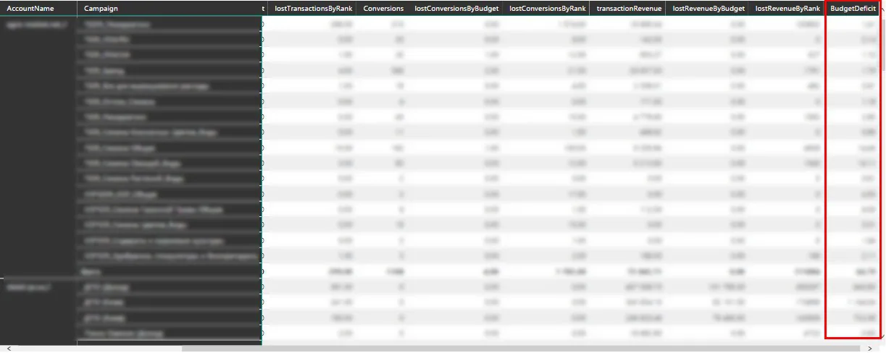
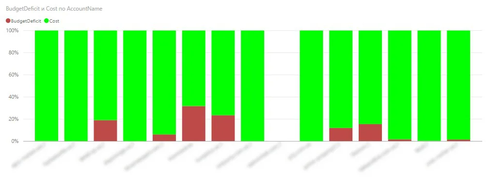
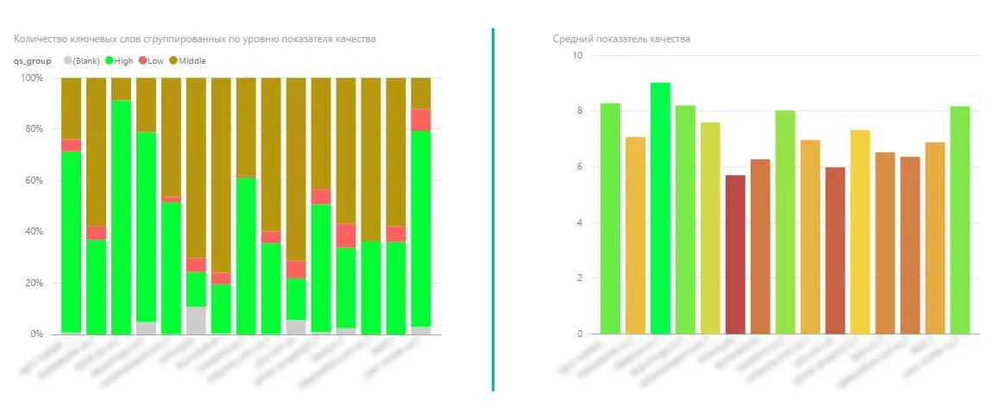
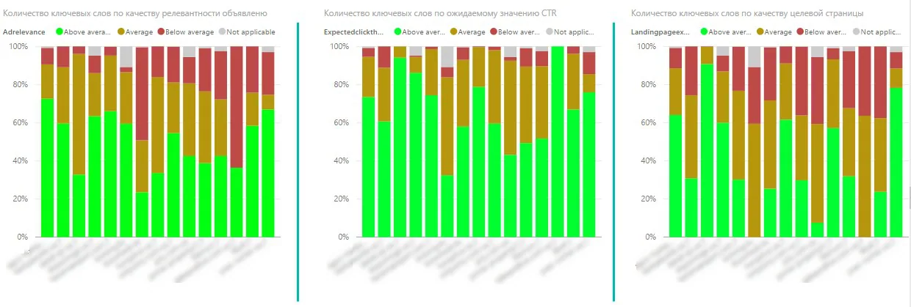
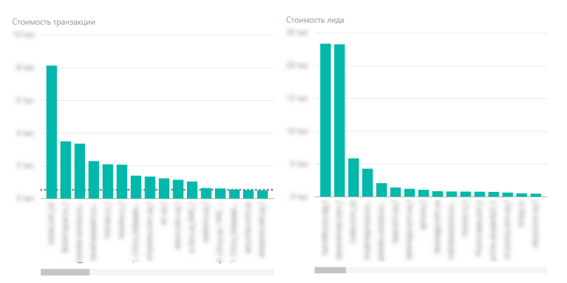
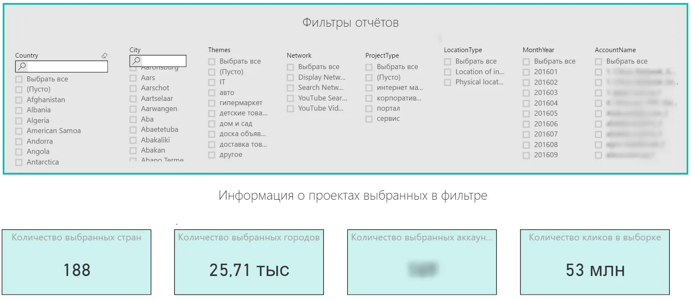

Как мы внедрили BI-аналитику в отделе контекстной рекламы
Хотите, я скажу, что делают ваши сотрудники прямо сейчас? Собирают вручную отчеты в электронных таблицах. Сколько времени они тратят зря, игнорируя автоматизацию? Увидеть реальную картину просто: посчитайте количество затраченных на отчетность человекочасов и умножьте на среднюю стоимость рабочего часа сотрудника.
В этой статье я расскажу, зачем внедрять BI-решение для бизнеса, какие задачи можно решить с помощью автоматизации и что получил Netpeak, разработав собственное BI-решение для отдела контекстной рекламы.
Business intelligence (BI) — методы и инструменты для перевода необработанной информации в осмысленную, удобную форму. Эти данные используются для бизнес-анализа. Технологии BI обрабатывают большие объемы неструктурированных данных, чтобы найти стратегические возможности для бизнеса.
Как долго длилось внедрение?
На реализацию проекта — от постановки задачи до завершения — ушло около 5 месяцев.
Чем мы занимались все это время?
1. Предпроектная подготовка.
1.1. Определили основную и дополнительные цели внедрения BI.
1.2. Определили источники, из которых следует получать необходимые данные. В качестве первоочередных источников выбраны Google AdWords, Google Analytics, Яндекс. Директ и Facebook. На эти площадки уходит подавляющая часть всего рекламного бюджета по проектам наших клиентов. Также источником стала внутренняя ERP и ряд Google таблиц, которые заполняют сотрудники.
1.3. Исходя из поставленных целей, определили перечень отчетов, диаграмм и фильтров, необходимых для решения бизнес-задач.
1.4. Разработали архитектуру базы данных, в которой будет храниться необходимая для визуализации информация.
1.5. Подобрали инструменты для реализации проекта при минимальных финансовых затратах.
2. Техническая реализация проекта.
2.1. Изучили документацию по работе с API всех выбранных ранее источников.
-
-
- Google Analytics — документация по API;
- Google AdWords — документация по API;
- Яндекс Директ — документация по API;
- Facebook — документация по API.
-
2.2. Получили доступ к API всех необходимых источников.
2.3. Написали пакеты функций на языке R для работы с API Яндекс. Директ и Facebook:
-
-
- пакет ryandexdirect для работы с API Яндекс Директ;
- пакет rfacebookstat для работы с API Facebook.
-
2.4. Изучили документацию пакетов функций для работы с API Google Analytics и Google AdWords, а также для перевода денежных данных в одну валюту.
2.5. Написали скрипты на языке R для сбора и записи данных из всех источников в базу.
2.6. Настроили визуализацию всех отчетов и диаграмм.
2.7. Разграничили уровни доступа к отчетам для сотрудников.
А теперь — к подробностям.
Как определить цели внедрения BI?
Как понять, что вашему бизнесу нужен BI, а не ручной сбор и обработка данных в электронных таблицах?
Проанализируйте:
- сколько времени уходит на ручной сбор и манипуляции с данными;
- какие именно задачи вы хотите решить с помощью BI.
На момент написания статьи в штате Netpeak работает более 30 специалистов по контекстной рекламе. Каждый из них регулярно собирает и анализирует данные по кампаниям из различных систем. Чтобы у специалистов освободилось время на анализ данных и оптимизацию рекламы, мы решили собрать всю необходимую информацию «в одной вкладке».
В отделе контекстной рекламы Netpeak определили такие цели:
- Контроль основных показателей эффективности рекламных кампаний на всех рекламных площадках и по всем проектам.
- Поиск путей масштабирования рекламных кампаний без потери эффективности.
- Рост бюджетов без снижения эффективности рекламных кампаний.
- Общий рост эффективности рекламных кампаний по всем проектам.
Как определить, какие таблицы и диаграммы необходимы для достижения целей?
Это просто. Когда вы четко сформулировали цель, понимание, какую информацию и в каком виде необходимо получить появляется автоматически.
После общения со специалистами и руководством отдела, мы определили список отчетов, диаграмм и ключевых показателей, на которые опираются сотрудники при анализе рекламных кампаний, и руководство — при оценке эффективности отдела, состоящего из более чем 30 человек.
В результате было описано 60 визуальных элементов и ряд фильтров (для удобства работы с ними).
Как найти инструменты для реализации проекта при минимальных тратах?
При выборе инструментов лучше всего опираться на мнение специалиста, который владеет как минимум несколькими BI-платформами и базами данных, а также умеет работать с большими объемами данных.
Еще один ориентир при выборе BI-платформы — ежегодное исследованиеGartner Magic Quadrant for Business Intelligence and Analytics Platforms.

Лидеры в BI-отрасли не меняются уже достаточно много лет. Это Microsoft (Power BI), Tableau Software (Tableau) и Qlik (QlikView, QlilSense). Именно на эти решения стоит обратить внимание.
Подбирая BI-платформу для решения конкретной задачи, учитывайте:
- из каких источников необходимо получить данные для визуализации;
- потребуется ли вам онлайн-доступ к отчетам;
- каким бюджетом вы располагаете.
Я выбрал следующие инструменты:
- Таблицы Google — для хранения справочной информации по проектам, а также информации, которую сотрудники компании ежедневно вносят вручную. Как правило, это небольшие таблицы, которые состоят максимум из нескольких сотен строк. Данный инструмент бесплатный и идеально подходит для совместной работы сотрудников в одном документе в онлайн-режиме.
- Язык R — для сбора информации из API рекламных систем. Этот инструмент также бесплатный и предназначен для быстрой обработки больших массивов информации.
- MySQL — СУБД для хранения собранной информации, которую не требуется в дальнейшем каким-либо образом изменять. В базу данных мы записывали агрегированные данные, поэтому производительности MySQL с запасом хватает для решения нашей задачи. Ежемесячно поступает приблизительно 300 тысяч строк данных — при правильно настроенной конфигурации базы данных и правильной индексации таблиц производительности MySQL для обработки этого массива данных более чем достаточен. Как и предыдущие инструменты, MySQL совершенно бесплатный.
- Microsoft Power BI — инструмент визуализации данных. Доступного функционала достаточно для решения поставленной задачи. К тому же, Power BI для десктопов — совершенно бесплатный, а онлайн-версия обойдется дешевле, чем конкуренты (нет необходимости покупать отдельный сервер, все данные хранятся и обрабатываются на серверах Microsoft).
Техническая реализация проекта
Техническую реализацию стоит начинать с описания процесса сбора, очистки, агрегации, хранения и визуализации данных.
Чтобы рассчитать место, необходимое для хранения информации, обязательно выясните:
- с какой частотой необходимо обновлять отчеты;
- какой объем данных предполагается хранить;
- до каких объемов вырастет база в течении года.
Мы собираем информацию ежемесячно, далее в течение месяца специалисты оптимизируют рекламные кампании на основе отчетов, и в следующем месяце мы видим информацию для дальнейшей оптимизации и масштабирования.
Схема работы

Схема работы BI-решения для отдела контекстной рекламы Netpeak
- Ежемесячно все маркетологи вносят в таблицу Google данные по своим проектам. Так мы собираем справочник, который содержит всю необходимую для работы скриптов информацию.
- После актуализации справочника запускаются R-скрипты, которые собирают информацию с помощью API из всех рекламных площадок, связывают ее, агрегируют и записывают в базу данных MySQL.
- В течение месяца сотрудники компании заполняют множество других документов в таблицах Google: с информацией об оценках эффективности проектов, новым и ушедшим проектам и так далее. Все эти документы связаны с Power BI Desktop с помощью R-коннектора.
- Раз в месяц, после сбора всей информации за прошлый месяц, с помощью нажатия одной кнопки «Обновить» в интерфейсе Power BI Desktop актуализируются все отчеты и диаграммы.
- Данные публикуются в Power BI Service для онлайн-доступа специалистов, тимлидов и руководства отдела.
Как специалисты по контекстной рекламе используют BI-решение?
Начнем с того, что в Power BI можно разграничить роли. Так каждый сотрудник получил доступ к определенному набору данных.
Структура отдела:
DH (Department Head) — руководство. Сотрудники с этим уровнем доступа видят информацию по всем проектам, что помогает им контролировать работу отдела и своевременно реагировать на негативный тренд по ключевым показателям команд.
TL (Team Leaders) — руководители команд. Имеют доступ к информации по проектам специалистов входящих в их команду, но не видят данные по проектам других команд.
IM (Internet Marketer) — специалисты по контекстной рекламе. Имеют доступ к информации исключительно по своим проектам и не видят данные по проектам других специалистов.
Мы четко разграничили доступ к данным. Каждый сотрудник получил доступ к необходимой ему информации и может принимать решения на своем уровне ответственности.
В BI-отчетах можно посмотреть общую информацию по KPI, которые необходимо контролировать руководству отдела и команд:
- эффективность работы отдела,
- нагрузка специалистов,
- различная сегментация проектов и специалистов
- динамика изменения количества активных проектов и так далее.
Рассмотрим подробно, как специалисты применяют разработанный инструмент при ведении рекламных кампаний.
1. Общий анализ проекта
Первая таблица, которую видит специалист, отображает данные о сумме потраченных средств, количестве показов, кликов, CTR и стоимости клика в разрезе проекта, источника и канала трафика.

С этих данных начинается более глубокая аналитика каждого проекта. Специалист может перейти к изучению диаграмм, отображающих объем потерянных транзакций, дохода и конверсий, и на основе этих данных делать выводы по отдельному проекту или рекламной кампании.
2. Анализ объема потерянного дохода
Объем потерянной выгоды — на диаграмме с разбивкой на потери по бюджету и по рейтингу.

Специалист сразу видит:
- проекты и рекламные кампании, где можно поднять бюджет без снижения эффективности рекламных кампаний;
- проекты и рекламные кампании, в которых нужно обратить внимание на показатель качества и стоимость лида, чтобы минимизировать потери в связи с низким рейтингом объявлений.
Потерянные конверсии в связи с нехваткой бюджета специалист также может проанализировать с помощью специальной таблицы. В ней по каждому проекту и рекламной кампании представлены данные о том, сколько средств не хватило для максимально возможного охвата и сколько транзакций недополучили в связи с этим.

Также специалисту доступен график, отражающий долю бюджета, которую потенциально можно было потратить без потери эффективности.

Посмотрев перечисленные диаграммы и отчеты, специалист может написать письмо с рекомендациями на повышение бюджета, а также сразу указать объем дохода либо количество транзакций и конверсий, которые будут получены в результате повышения бюджета. Так специалист узнает, в каких проектах и по каким рекламным кампаниям можно эффективно растить рекламный бюджет и приносить больше выгоды клиентам.
3. Анализ потерянных конверсий в связи с рейтингом
Следующий шаг — минимизация потерянной выгоды в связи с низким рейтингом объявлений. В данном случае есть два пути.
3.1. Повышение показателя качества ключевых слов
В первую очередь необходимо уделить внимание показателю качества, так как это позволит оптимизировать стоимость транзакции.
Для работы над показателем качества специалисту доступно шесть диаграмм.
Первые две диаграммы показывают общую информацию о показателе качества по проектам. Также можно перейти на уровень рекламной кампании или группы объявлений.

Левая диаграмма разбивает все ключевые слова в аккаунте на три группы:
- High (обозначены зеленым цветом) — ключевые слова с высоким показателем качества, от 8 до 10 баллов.
- Middle (обозначены желтым цветом) — ключи со средней оценкой показателя качества, от 5 до 7 баллов.
- Low (обозначены красным цветом) — ключевые слова с показателем качества ниже 5 баллов.
Правая диаграмма отражает средний показатель качества по аккаунту, рекламной кампании или группе объявлений.
С помощью этих диаграмм специалист видит проблемные аккаунты, рекламные кампании, группы объявлений, и сразу может определить, какие ключевые слова необходимо оптимизировать.
Следующие три диаграммы показывают каждую составляющую показателя качества в разрезе аккаунтов, рекламных кампаний и групп объявлений.

На каждом графике видно соотношение ключевых слов с разными оценками. Зеленым цветом обозначена доля ключевых слов с оценкой выше среднего уровня, желтым — со средней, красным — с оценкой ниже среднего уровня.
В диаграмме слева вы увидите оценку ключевых слова по релевантности объявлению. Для ключей с низкой оценкой специалисту необходимо составить объявления, которые содержат в заголовке или тексте объявления ключевые слова.
Центральная диаграмма отражает оценку ключевых слов по ожидаемому значению CTR. Эта составляющая больше остальных влияет на показатель качества, но изменить ее оценку довольно сложно. Если в группе высокая доля объявлений с низким уровнем ожидаемого CTR, специалисту необходимо сделать объявления более заметными и привлекательными: проверить, включены ли расширения объявлений, более креативно подойти к самим текстам и заголовкам объявлений.
Диаграмма справа показывает оценку качества целевой страницы. В данном случае специалисту стоит попробовать изменить посадочную страницу в объявлении на более релевантную или порекомендовать клиенту переписать текст посадочной страницы, чтобы ключевые слова из группы объявлений встречались чаще.
После того, как специалист проработал показатель качества и вытянул его на максимальный уровень, снижается стоимость клика. Следовательно, растет количество кликов и транзакций в рамках прежнего бюджета.
3.2. Повышение ставок в рекламных кампаниях, где стоимость привлечения клиента это позволяет
Если после оптимизации показателя качества вы все также теряете показы в связи с низким рейтингом объявления, обратите внимание на установленные ставки. Чтобы маркетолог мог оценить, в силах ли он повысить ставки, мы добавили график, отображающий стоимость транзакции в разрезе рекламных кампаний.
Анализ стоимости транзакции
**

**
В каждом проекте специалист знает допустимую стоимость конверсии и может сопоставить эти данные с тем, сколько было потеряно конверсий. Если стоимость транзакции ниже допустимой и при этом существуют потери дохода из-за низкого рейтинга, стоит поднять ставки. В таком случае количество проигранных аукционов снизится, и специалист сможет привлечь больше заинтересованных пользователей и в результате — увеличить доход.
4. Масштабирование кампаний
В BI-решении добавлен ряд отчетов по стоимости клика в Google AdWords в разрезе разных тематик, а также стран и городов. Основываясь на эти данные, маркетолог может оценить, стоит ли масштабировать рекламные кампании на конкретные города и регионы, и сделать это максимально эффективно в зависимости от возможностей и специфики бизнеса клиента.
На данный момент доступна информация о стоимости клика:
- в 188 странах;
- 25,7 тысячах городов;
- в разбивке на 27 тематик.

Также подобный отчет доступен и о стоимости клика в разбивке на тематики и страны в Facebook.
Демоверсия части готового решения на случайно сгенерированной выборке данных
Посмотреть демоверсию описанного решения на тестовой выборке данных можно по этой ссылке.
Выводы
Как мы внедрили BI-аналитику для отдела контекстной рекламы:
- Определили цели, источники и перечень отчетов, необходимых для решения бизнес-задач.
- Разработали архитектуру базы данных и подобрали инструменты для реализации проекта.
- Получили доступ к API всех необходимых источников и разработали необходимые пакеты функций на языке R.
- Визуализировали отчеты в Power BI.
- Разграничили доступы к данным в зависимости от роли сотрудника.
Что в результате?
- Руководство:
- контролирует выполнение KPI отдела;
- получает данные для распределения проектов между специалистами в зависимости от их нагрузки.
- Маркетологи на основе полученных данных:
- оценивают объем потерянного дохода; анализируют потерянные конверсии в связи с рейтингом;
- оптимизируют рекламные кампании и быстро определяют зоны роста;
- масштабируют рекламные кампании, подключая новые источники и регионы.
Следите за рубрикой «Кейсы», чтобы первыми узнать, как BI-аналитика отдела контекстной рекламы повлияла на бизнес наших клиентов.